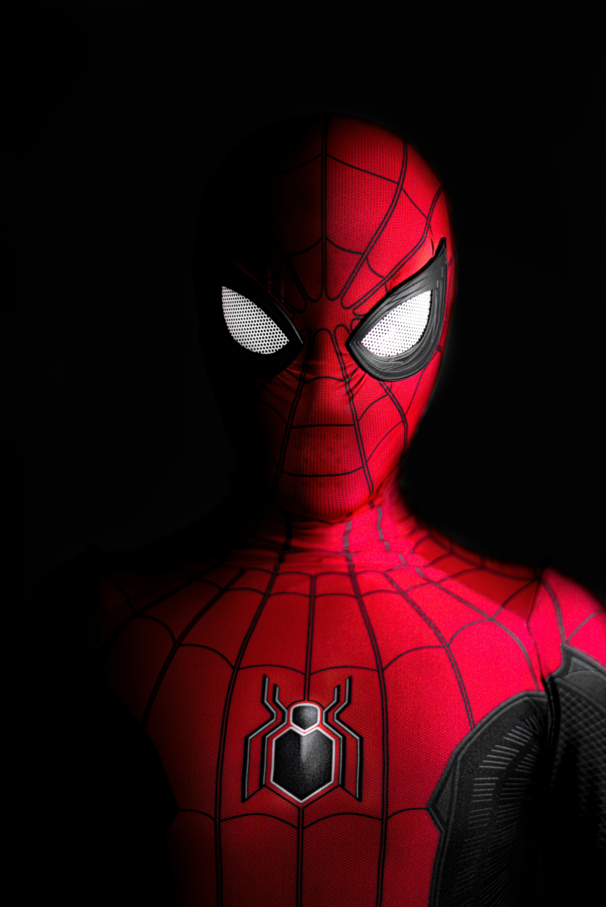
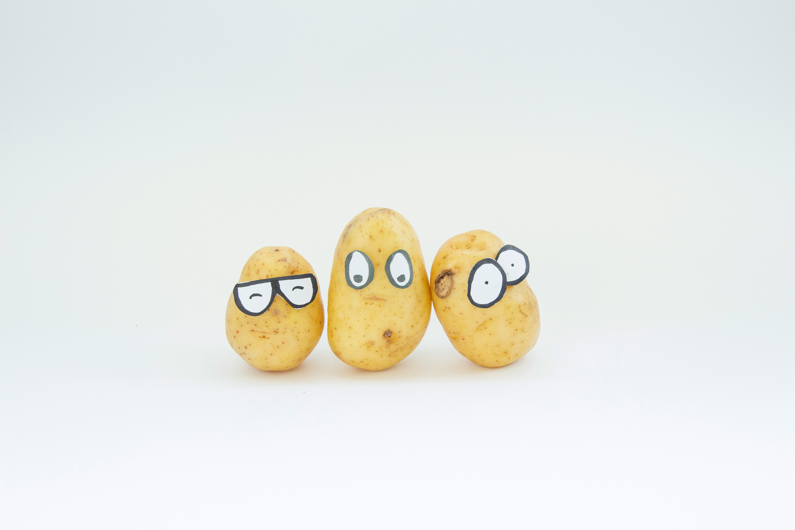

Hello everyone!
This is my web page, you can call me arno kap or ak, whatever you prefer.
I like to play games like minecraft(which is my favourite one), and also like cooking, my favourite food is lasagna.
I really like the movie rush hour 2, its main actors are jackie chan and chris tucker, I really like it and really recommend it to you if you havnt watched it yet.
My favourite book series is one piece, this is a manga series written and illustrated by Eiichiro Oda, it is about a group of pirates who are searching for the ultimate treasure called "one piece" and through out their journey they meet different people and some join them into their crew. They also defeat lots of Mean villains like crocodlie or arlong. In this series the main character is Luffy.

Right now Im making a hackpad called the Arnopad because its my macro pad and my name is Arno.
I am also making a few other things for hackclub such as a little weather station and also a website that can give you tips and information about minecraft.

If you want to contact me you can either emial me at timo.28.dan@gmail.com or at my slack which is Lionroar28